专题2.3 数轴
专题2.3 数轴

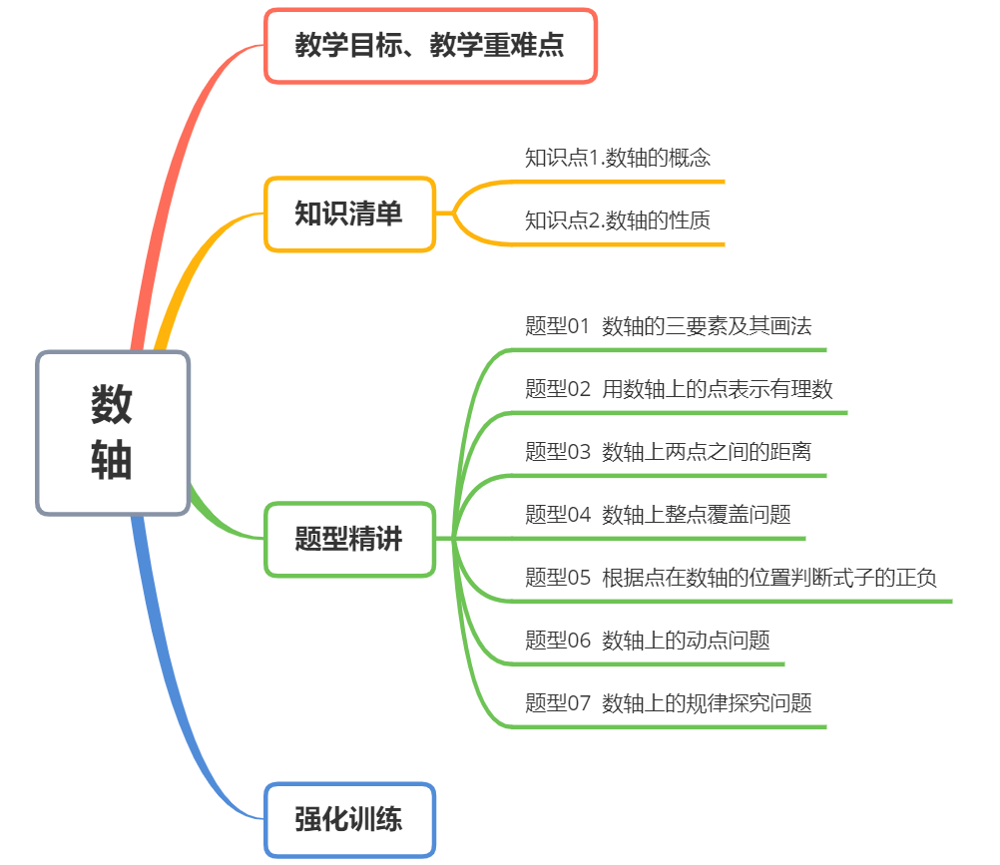
教学目标 | 1.识记数轴的三要素并会画数轴. 2.能将已知数在数轴上表示出来，能说出数轴上的已知点所表示的数；会用数轴比较有理数的大小. 3.会用数形结合的思想理解在特定的条件下数与形是可以相互转化的. |
教学重难点 | 1.重点：理解数轴的概念，会在数轴上表示数. 2.难点：正确的画出数轴，理解有理数和数轴上点的对应关系. |

知识点1.数轴的概念
概念：规定了原点、正方向、单位长度的直线叫做数轴。
三要素：原点、正方向、单位长度
【即学即练】下列图形是四位同学画的数轴，其中正确的是（ ）
A． B．
B．
C． D．
D．
【答案】C
【知识点】数轴的三要素及其画法
【分析】本题考查画数轴，根据数轴的三要素，原点，单位长度，正方向，进行判断即可．
【详解】解：A、没有正方向，错误，不符合题意；
B、单位长度不统一，错误，不符合题意；
C、画法正确，符合题意；
D、没有原点，错误，不符合题意；
故选C．
知识点2.数轴的性质
1.一一对应关系：数轴上的点和有理数是一一对应的。
2.应用 ：（1）比较大小：在数轴上，右边的数总比左边的数大 。
（2）求两点之间的距离：两点在原点的同侧作减法，在原点的两侧作加法。
【即学即练】（ ）如图是一个不完整的数轴，请将数轴补充完整，并把下列各数在数轴上表示出来；
）如图是一个不完整的数轴，请将数轴补充完整，并把下列各数在数轴上表示出来；
 ，
， ，
， ，
， ，
， ．
．
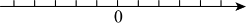
（ ）将上述各数按从小到大的顺序用“
）将上述各数按从小到大的顺序用“ ”把它们连接起来．
”把它们连接起来．
【答案】（）数轴表示见解析；（）
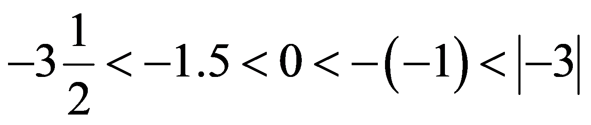
【知识点】用数轴上的点表示有理数、利用数轴比较有理数的大小、化简多重符号、带有字母的绝对值化简问题
【分析】（）先化简各数，再把各数在数轴上表示出来即可；
（）根据数轴比较大小即可；
本题考查了利用数轴比较有理数的大小，正确画出数轴是解题的关键．
【详解】解：（）∵
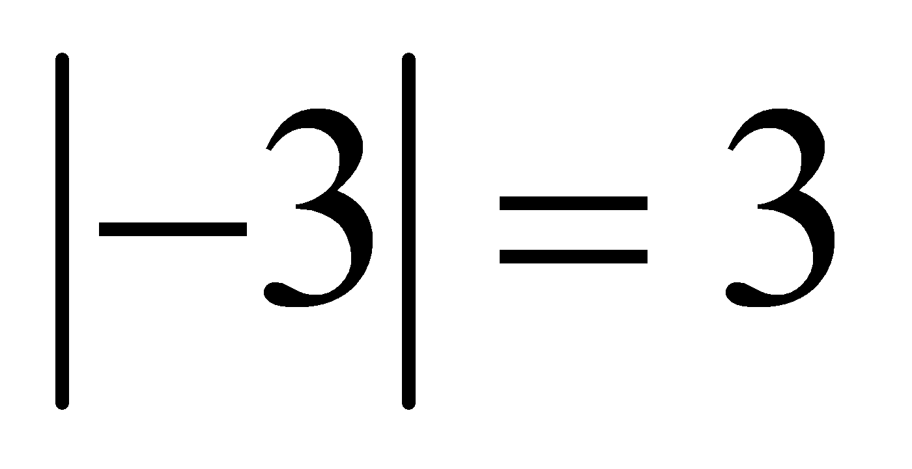
， ，
，∴各数在数轴上表示如下：
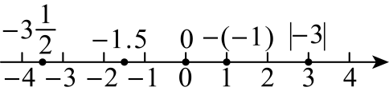
（）由数轴可得， ．
．

题型01 数轴的三要素及其画法
【典例1】下面是几名同学画的数轴，正确的是（ ）
A． B．
B．
C． D．
【答案】A
【分析】本题考查数轴的画法，掌握数轴三要素的解题关键．
根据数轴三要素：原点、正方向、单位长度，即可判断．
【详解】解：数轴三要素：原点、正方向、单位长度，则：
A选项，满足三要素，符合题意；
B选项，单位长度不一致，不符合题意；
C选项，没有原点，不符合题意；
D选项，没有正方向，不符合题意．
故选：A．
【变式1】下列数轴表示正确的是（ ）
A．
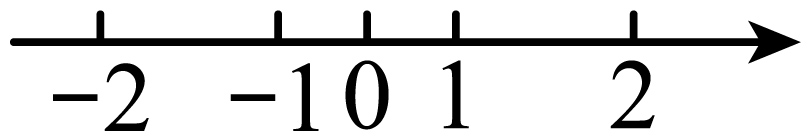
B．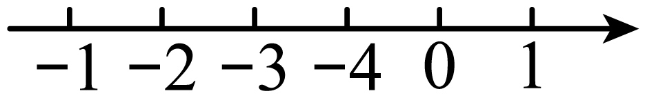
C．
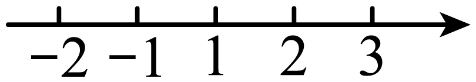
D．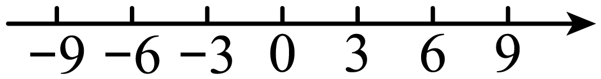
【答案】D
【分析】根据数轴的三要素即规定了原点，正方向，单位长度的直线叫做数轴，解答即可．
本题考查了数轴的三要素，熟练掌握数轴三要素是解题的关键．
【详解】
解：A. 具备了三要素，但是单位长度不同，
该选项错误，不符合题意；
B. 具备了三要素，但是负数的标记位置错误，
该选项错误，不符合题意；
C. 没有原点，
该选项错误，不符合题意；
D. 表示正确，
该选项正确，符合题意；
故选：D．
【变式2】下列数轴表示正确的是（ ）
A． B．
C． D．
D．
【答案】D
【分析】本题考查了数轴的定义，熟练掌握数轴的定义是解题的关键．根据数轴的“三要素”，对选项逐个分析判断即可．
【详解】解：A、数轴中的单位长度不一致，故A选项错误；
B、数轴中的负数排列顺序错误，故B选项错误；
C、数轴中没有原点，故C选项错误；
D、的数轴是正确的数轴，故D选项正确．
故选：D．
【变式3】以下是四位同学画的数轴，其中正确的是（ ）
A． B．
B．
C． D．
D．
【答案】D
【分析】本题考查了数轴三要素：原点、单位长度和正方向，任何一个条件都不能少，都必须体现在数轴上．据此逐项分析即可．
【详解】解：A．该数轴无原点，故不正确；
B．该数轴无正方向，故不正确；
C．该数轴原点左边的数值标错，故不正确；
D．该数轴具备数轴三要素，故正确；
故选D．
题型02 用数轴上的点表示有理数
【典例2】已知一组数：0，3， ，
， ，
， ．
．
(1)把这些数在下面的数轴上表示出来：

(2)请将这些数按从小到大的顺序排列（用“ ”连接）： ．
”连接）： ．
【答案】(1)见解析
(2)
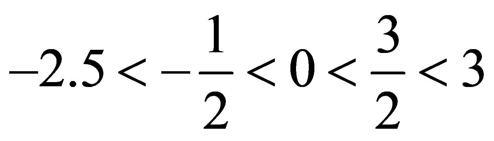
【分析】本题主要考查了有理数与数轴，利用数轴比较有理数的大小，正确在数轴上表示出各数是解题的关键．
（1）根据数轴的特点，在数轴上表示出各数即可；
（2）数轴上左边的数小于右边的数，据此用小于号将各数连接起来即可．
【详解】（1）解：如图所示，即为所求；
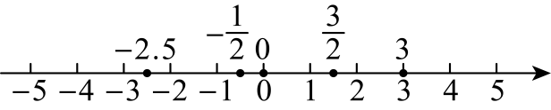
（2）解：由数轴可得．
【变式1】给出下列9个有理数，按下列要求解答：

3，
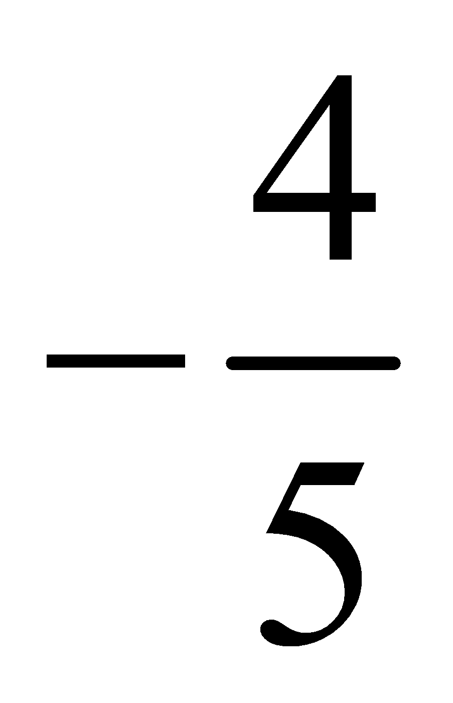
，0， ，0.45，
，0.45， ，
， ，，
，，
(1)把上面的9个数用“”排列起来；
(2)把数3，0，，，表示在数轴上．
【答案】(1)
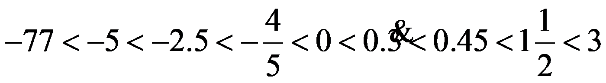
(2)见详解；
【分析】本题考查了数轴、有理数的大小比较．熟知相关定义是正确解题的关键．
（1）根据“正数都大于零，负数都小于零，正数大于负数”的法则即可结果；
（2）根据数轴是用直线上的点表示数的一条直线，可把数在数轴上表示出来；
【详解】（1）解：将3，，0，，
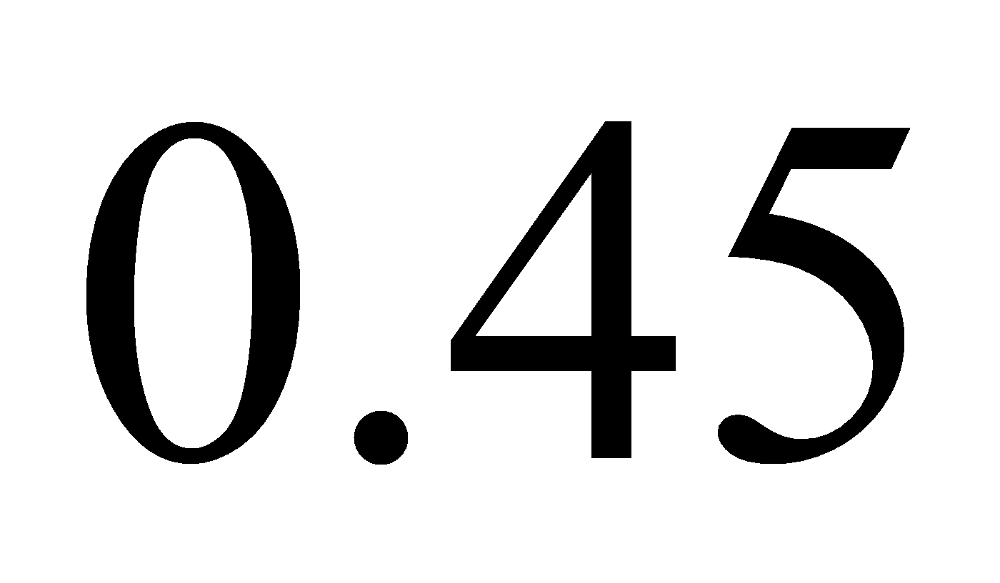
，，，，用“”排列如下： ；
；
（2）解：把数3，0，，，表示在数轴上，如下：
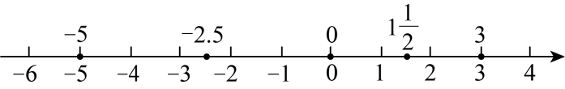
【变式2】如图所示数轴．
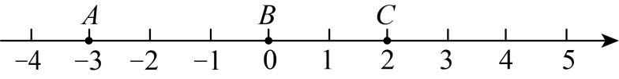
(1)写出数轴上A，B，C各点分别表示的有理数：
(2)在数轴上把下列各数分别表示出来： ，
， ，
， ；
；
(3)用“”将（1）、（2）中的六个数由小到大连接起来．
【答案】(1) ，0，2
，0，2
(2)见解析
(3)
【分析】（1）根据数轴的意义，写出有理数即可：
（2）根据数轴的意义， ，再数轴上表示出来即可；
，再数轴上表示出来即可；
（3）根据数轴上，靠近右边的数大于其左边的数，解答即可．
本题考查了数轴上表示有理数，多重符号化简，数轴上有理数的大小比较，正确理解大小比较的原则是解题的关键．
【详解】（1）解：根据数轴的意义，得数轴上A，B，C各点分别表示的有理数为：，0，2．
（2）解：，数轴表示如下：
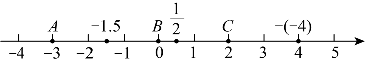
（3）解：根据题意，得
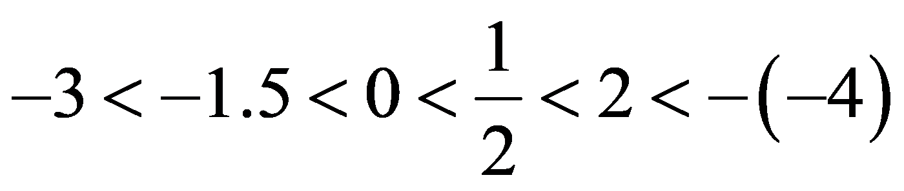
．【变式3】已知一组数据：
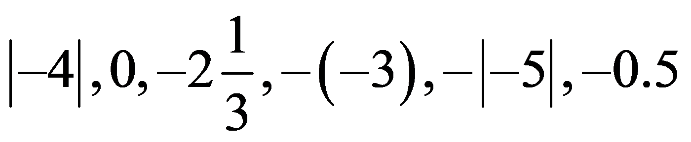
(1)在数轴上表示出这组数据：

(2)将这些数填入相应的大括号内：
正整数集：{ …}；
负分数集：{ …}；
【答案】(1)见解析
(2)
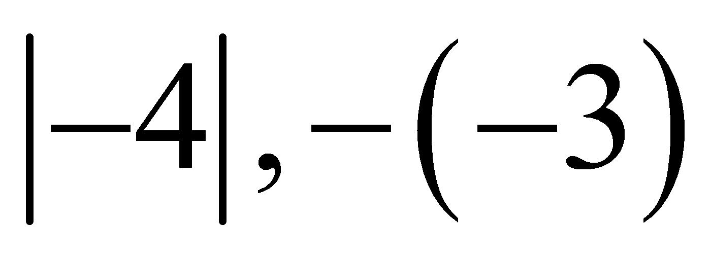
；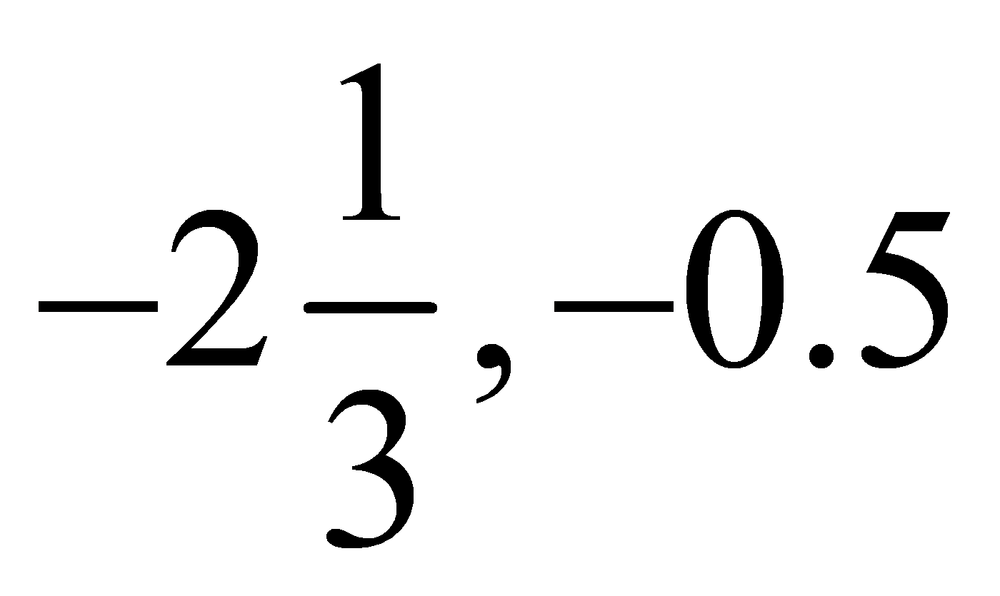
【分析】本题考查了在数轴上表示有理数，有理数的分类，求一个数的绝对值，相反数，熟练掌握基础知识点是解本题的关键．
（1）先根据相反数的定义和绝对值的意义求出
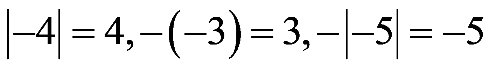
，再在数轴表示即可；（2）根据有理数的分类进行填空即可．
【详解】（1）解：，
∴数轴表示为：
（2）解：正整数有：，
负分数有：，
∴正整数集：
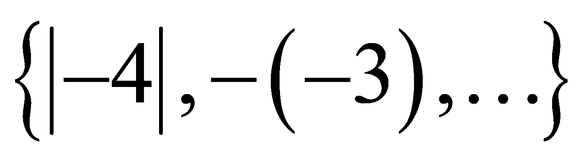
；负分数集：
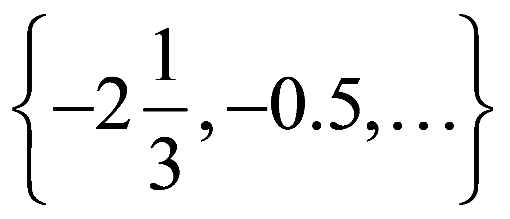
．题型03 数轴上两点之间的距离
【典例3】如图，数轴上点A表示的数是 ，点B表示的数是3，则A、B两点之间的距离是 ．
，点B表示的数是3，则A、B两点之间的距离是 ．
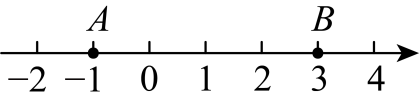
【答案】4
【分析】本题考查了数轴上两点之间的距离，正确把握数轴上两点之间距离求法是解题关键．
直接利用数轴上两点之间距离求法进而得出答案．
【详解】解：∵数轴上点A表示的数是，点B表示的数是3，
∴A，B两点间的距离是：
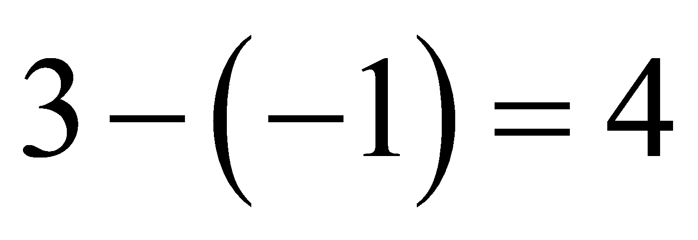
，故答案为：4．
【变式1】点A、B在数轴上的位置如图所示，则A、B两点的距离 ．
．

【答案】3
【分析】本题考查了数轴上两点之间的距离，解题关键是掌握两点间的距离公式，解为右边的数减去左边的数，或者是两个数的差的绝对值．直接利用右边的点表示的数减去左边的点表示的数即可．
【详解】解：
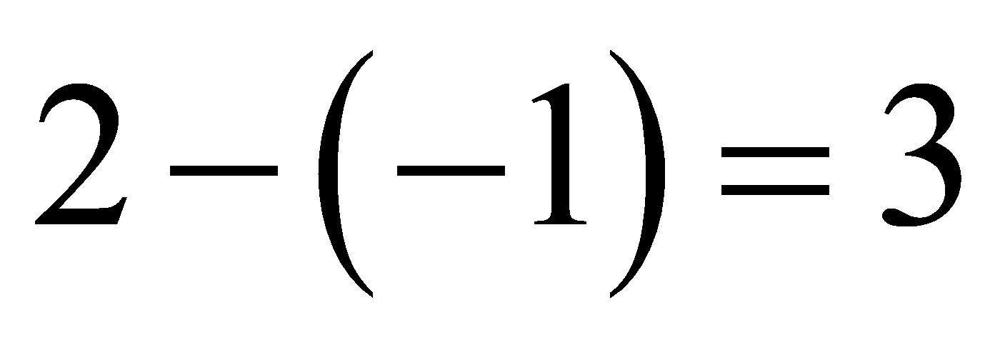
，故答案为： ．
．
【变式2】已知数轴上有 两点，点
两点，点 表示的数为，点
表示的数为，点 在数轴的负半轴上，若
在数轴的负半轴上，若
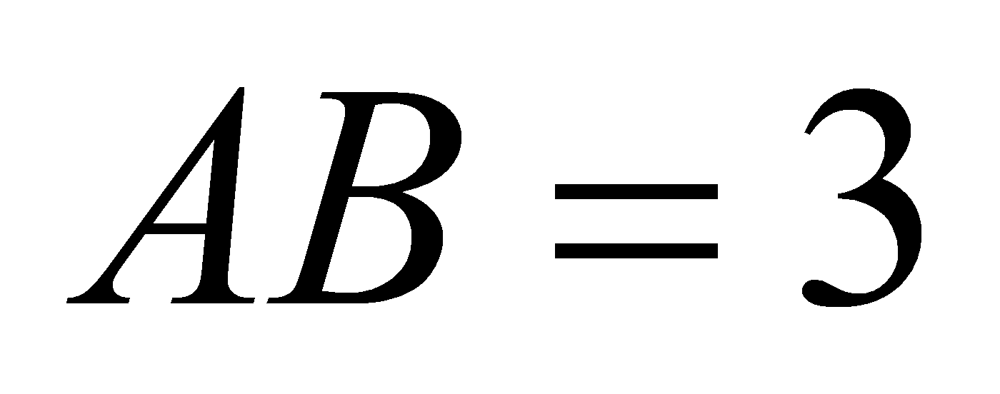
，则点表示的数为 ．【答案】
【分析】本题考查了数轴；
根据点在数轴的负半轴上，且，直接列式计算即可．
【详解】解：∵点表示的数为，，点在数轴的负半轴上，
∴点表示的数为
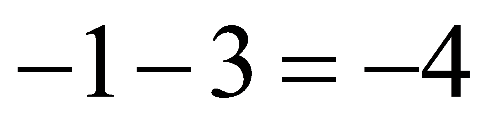
，故答案为：．
【变式3】已知数轴上点表示的数为，点与点的距离为 ，则点表示的数为 ．
，则点表示的数为 ．
【答案】 或
或
【分析】本题考查数轴上两点之间距离求法、数轴上的点表示有理数等知识，由数轴上点表示的数，再根据数轴上两点之间的距离，计算即可得到答案．掌握数轴上两点之间距离的求法是解决问题的关键．
【详解】解：已知数轴上点表示的数为，点与点的距离为，则点表示的数为
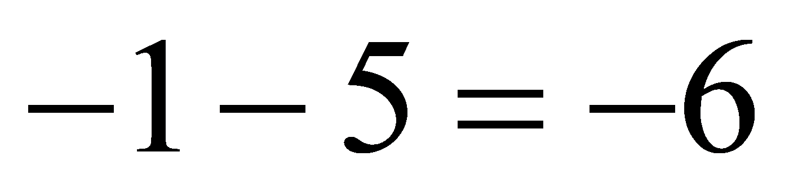
或者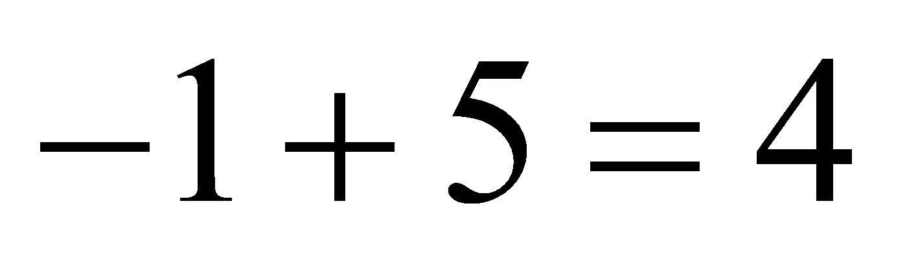
，故答案为：或．
题型04 数轴上整点覆盖问题
【典例4】如图所示，在数轴上，墨渍遮挡住的点表示的数可能是（ ）

A． B．0 C．
B．0 C．
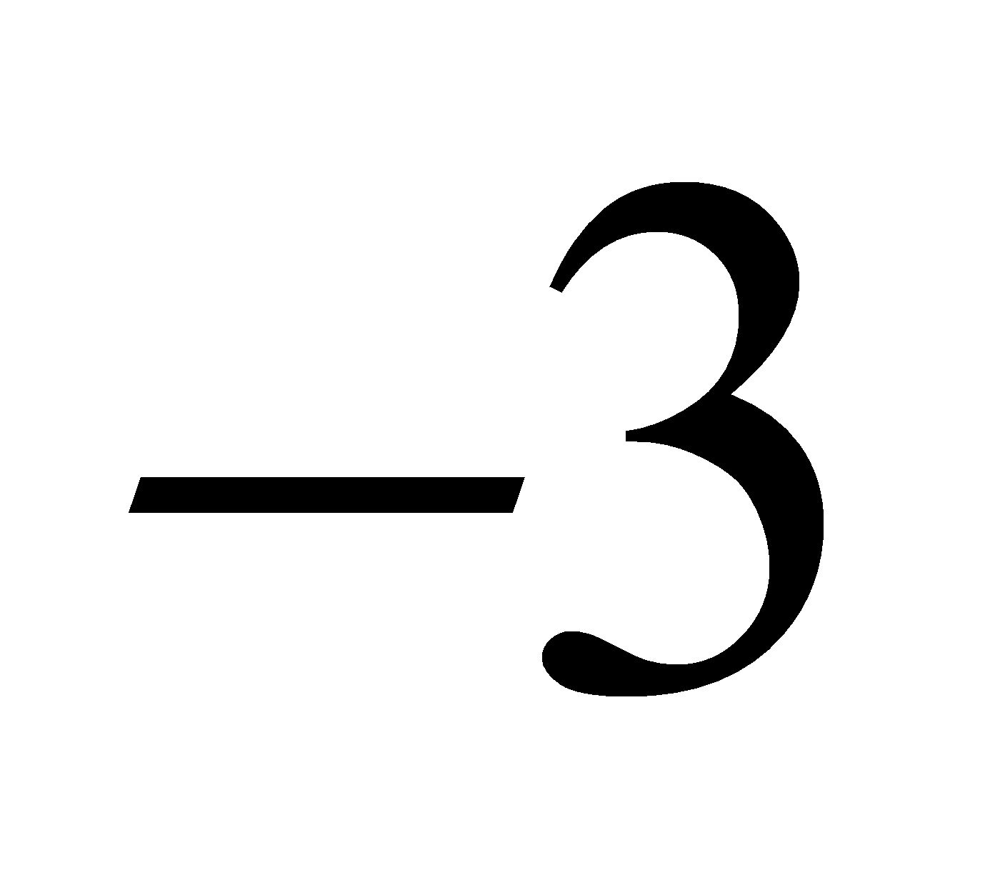
D．2.5【答案】A
【知识点】数轴上整点覆盖问题
【分析】本题考查了数轴，墨渍遮挡住的点在0的左边且距离0一个单位，即可得出结论．
【详解】解：在数轴上，墨渍遮挡住的点表示的数为负数，可能是 ．
．
故选：A．
【变式1】小宇不小心将墨水滴在了数轴上，使部分数轴被墨迹遮盖，则被遮盖的部分中表示整数的点有（ ）

A．3个 B．4个 C．5个 D．6个
【答案】C
【知识点】数轴上整点覆盖问题、用数轴上的点表示有理数
【分析】此题考查了用数轴上的点表示有理数．写出被遮盖的部分中整数即可得到答案．
【详解】解：根据题意可得，被遮盖的部分中整数有
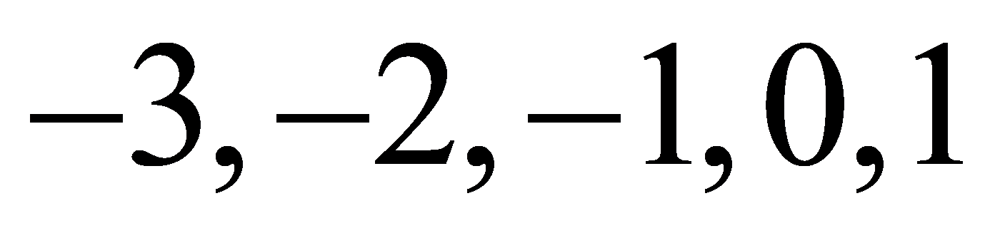
，共5个，即被遮盖的部分中表示整数的点有5个，故选：C
【变式2】如图，小冰在写作业时不慎将墨水滴在数轴上，此时墨迹盖住的整数有 个．

【答案】2
【知识点】数轴上整点覆盖问题、用数轴上的点表示有理数
【分析】本题考查了数轴的特点，理解并掌握数轴上点与数的一一对应关系是解题的关键．
根据数轴的特点，数形结合分析即可求解．
【详解】解：根据数轴的特点，墨迹盖住的整数有 ，
， ，共2个，
，共2个，
故答案为：2 ．
【变式3】如图的数轴被墨迹盖住一部分，被盖住的整数点有多少个？它们对应的数是多少？

【答案】9个，它们对应的数是
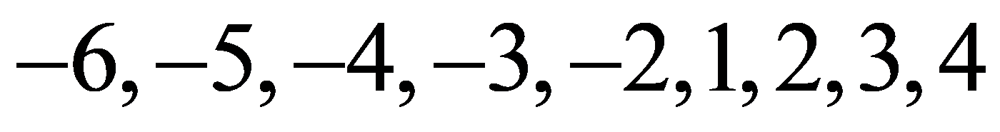
【知识点】数轴上整点覆盖问题、用数轴上的点表示有理数
【分析】本题考查了数轴，是基础题，知道数轴上的点是连续的是解题的关键．根据数轴上的点是连续的特点，写出被墨水盖住的整数即可．
【详解】解：根据数轴的特点，
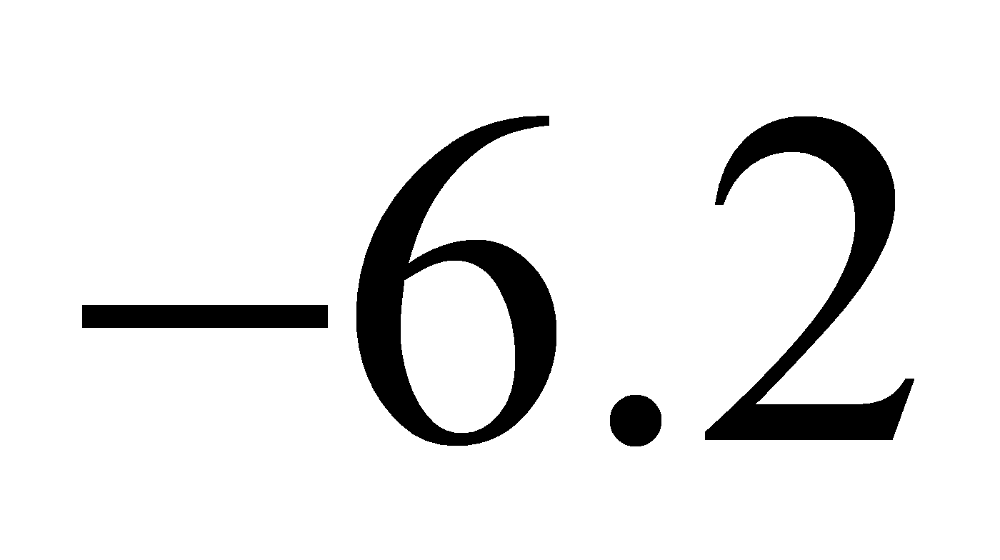
到之间的整数有 、
、 、
、 、
、 、
、 共5个，
共5个，0到
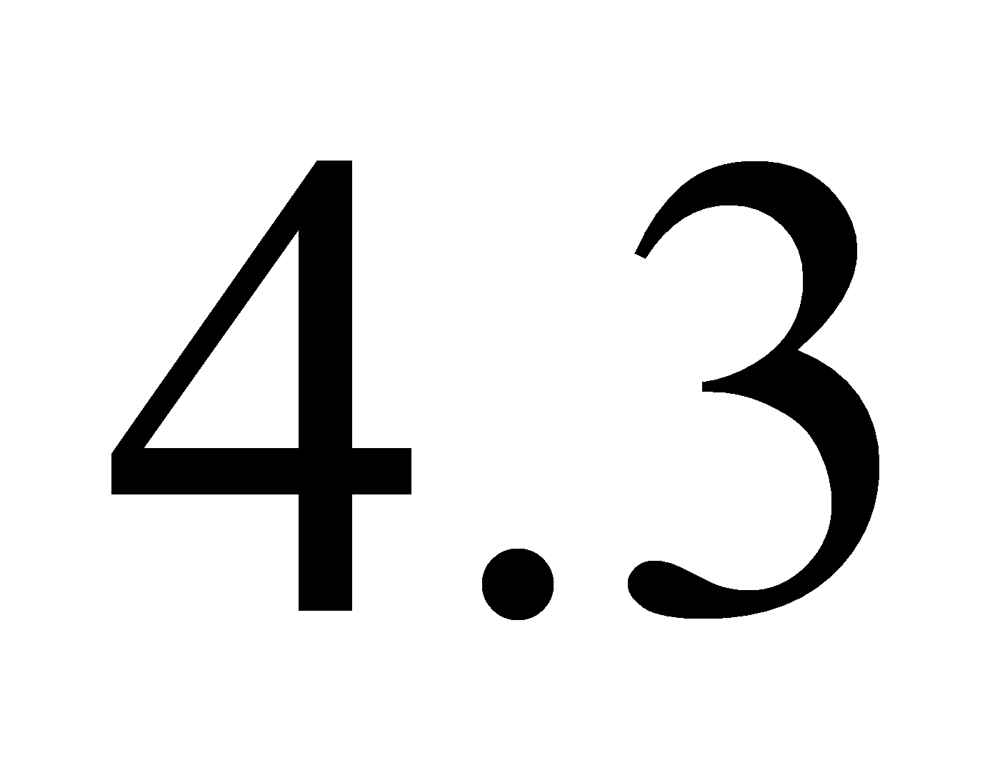
之间的整数有1、2、3、4共4个，所以被墨迹盖住的整数有 （个）．
（个）．
它们对应的数是．
题型05 根据点在数轴的位置判断式子的正负
【典例5】若有理数 、
、 在数轴上的位置如图所示，则、的大小关系为 ．（填“
在数轴上的位置如图所示，则、的大小关系为 ．（填“
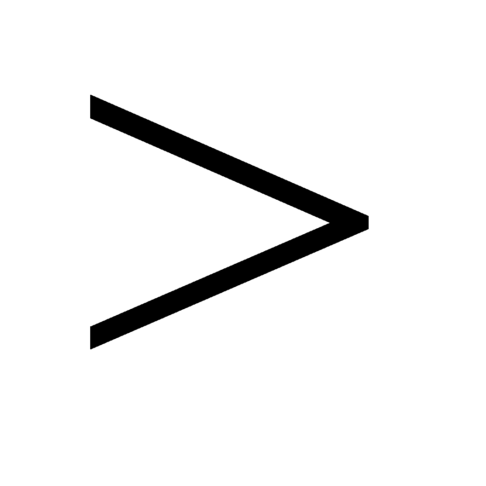
”或“ ”）
”）
【答案】
【知识点】利用数轴比较有理数的大小
【分析】本题考查了数轴的知识，掌握以上知识是解答本题的关键；
根据数轴上各数的位置得出
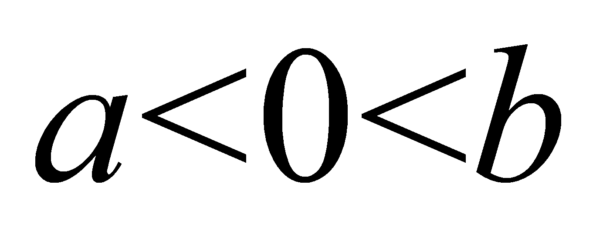
，容易得出结论；【详解】解：根据题意由数轴得：，
∴ ，
，
故答案为：；
【变式1】有理数a，b，c在数轴上的位置如图所示，则 0．（填“
0．（填“ ”或“
”或“ ”）
”）
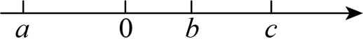
【答案】
【知识点】根据点在数轴的位置判断式子的正负、利用数轴比较有理数的大小
【分析】本题考查利用数轴判断式子的符号，数轴上右边的点表示的数大于左边的点表示的数，由此可解．
【详解】解：由图可知，数轴上c在b的右侧，

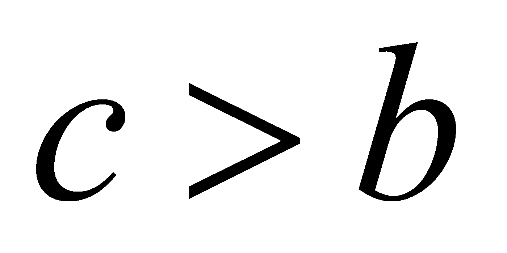
， ，
，
故答案为：．
【变式2】已知a，b在数轴上的位置如图所示，则  （用“>”或“<”填空）．
（用“>”或“<”填空）．
【答案】<
【知识点】根据点在数轴的位置判断式子的正负、利用数轴比较有理数的大小
【分析】先比较出的大小，然后在进行移项可得到问题的答案．此题考查了数轴以及有理数的大小比较，弄清题意是解本题的关键．
【详解】解：根据题意得： 且
且
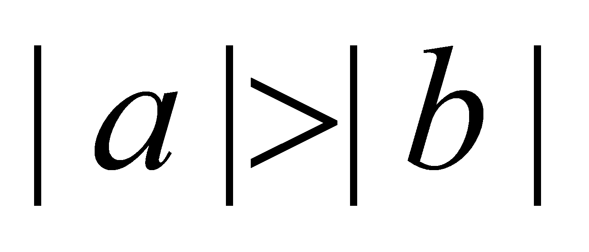
， 如图所示：
如图所示：
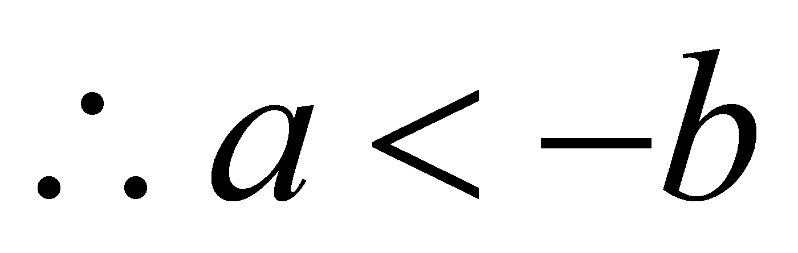
．故答案为：．
【变式3】如图，数轴上的点 ，
， 对应有理数
对应有理数 ，
， ，有以下四个结论：
，有以下四个结论： ；
；
 ；
；
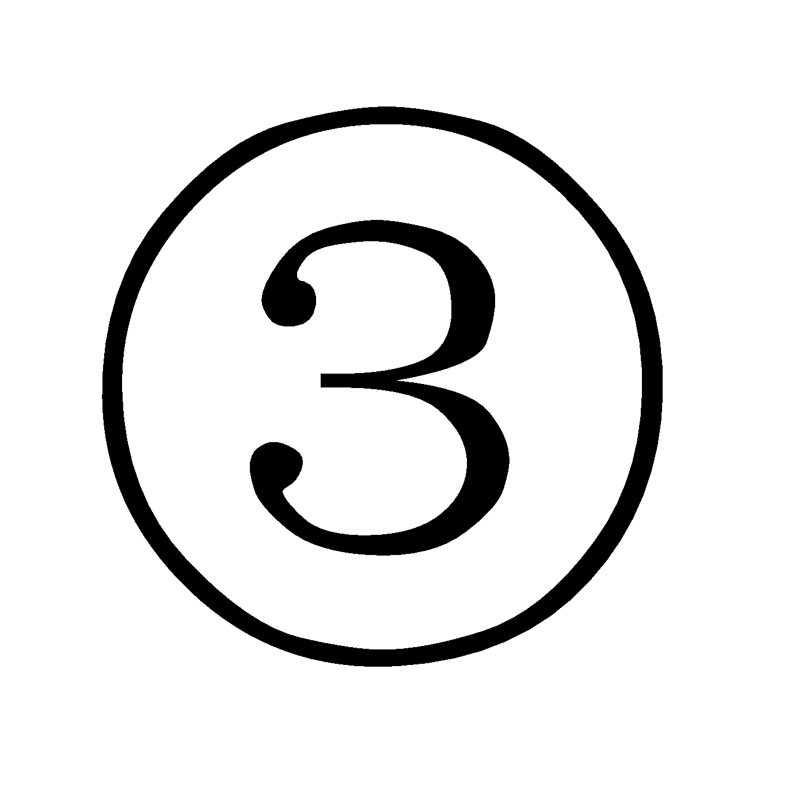
 ；
；
 ，其中正确的是 填写序号
，其中正确的是 填写序号

【答案】
【知识点】利用数轴比较有理数的大小
【分析】本题考查了数轴，解题的关键是掌握数轴知识．利用数轴知识解答．
【详解】解：由数轴图可知，
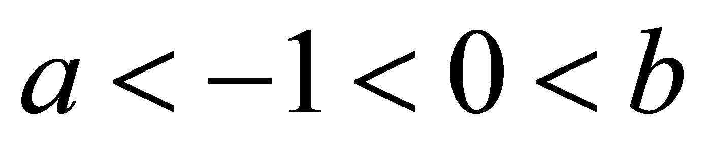
，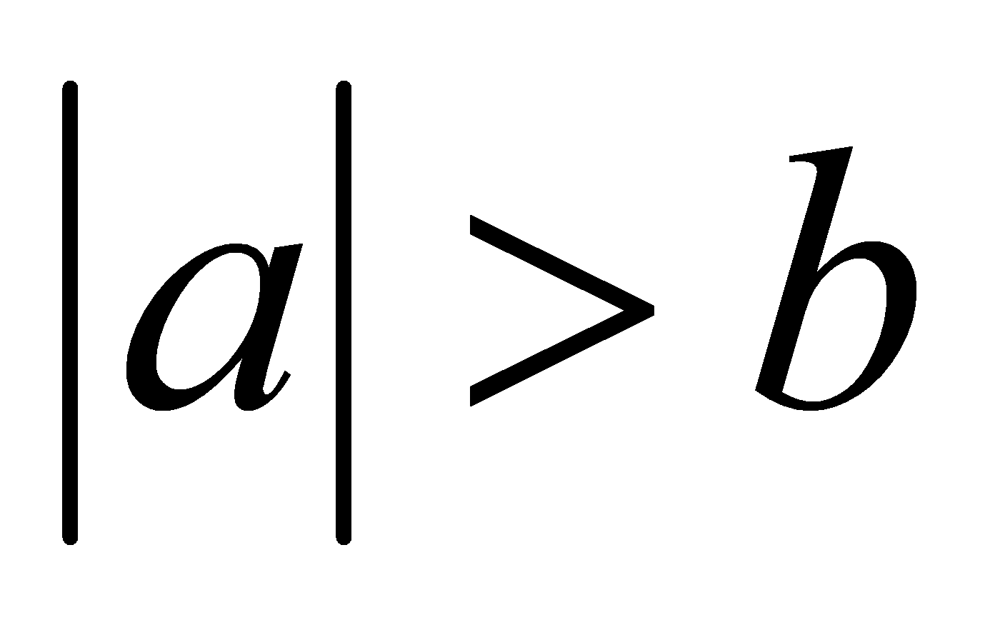
，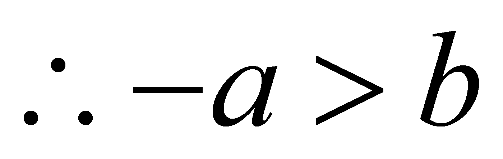
， ．
． 正确，错误， 错误， 错误，
正确，错误， 错误， 错误，
．正确的是
故答案为∶
题型06 数轴上的动点问题
【典例6】如图，将点P向右平移3个单位，对应的数是（ ）
A． B． C．0 D．1
【答案】D
【分析】本题考查了数轴上点的平移，掌握“左减右加”的原则是解答本题的关键．根据“左减右加”的原则即可求解．
【详解】解：将点 向右平移个单位，对应的数是
向右平移个单位，对应的数是
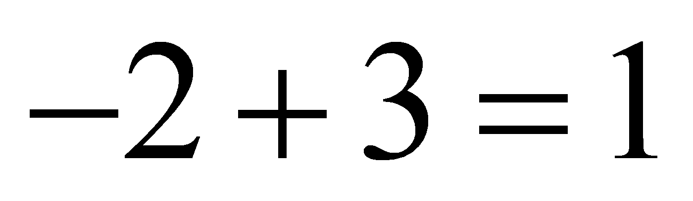
，故选：D．
【变式1】如图，将点向右平移 个单位，对应的数是（ ）
个单位，对应的数是（ ）

A． B． C．
C． D．
D．
【答案】B
【分析】本题考查了数轴上点的平移，掌握“左减右加”的原则是解答本题的关键．根据“左减右加”的原则即可求解．
【详解】解：将点向右平移个单位，对应的数是，
故选：B．
【变式2】在数轴上点如图所示，将点在数轴上右移7个单位到达点，则点所表示的数为（ ）
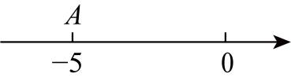
A．7 B．2 C． D．
D．
【答案】B
【分析】本题考查数轴上点的平移，以及利用数轴表示有理数，根据图像得到点表示的数，再结合题意得到点所表示的数，即可解题．
【详解】解：由图知点表示的数为，
将点在数轴上右移7个单位到达点，则点所表示的数为
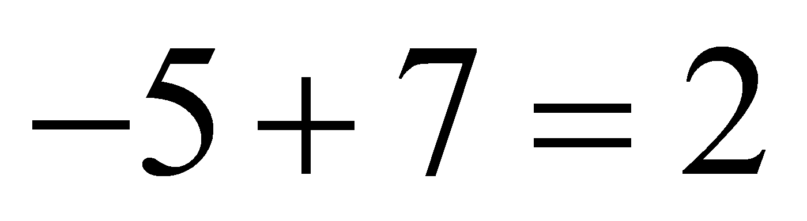
，故选：B．
【变式3】数轴上一点A向左移动5个单位后到达点B，如果点B到原点的距离为1，则点A表示的数是（ ）
A．1 B．1或 C．5或 D．4或6
【答案】D
【分析】本题考查了用数轴表示有理数，数轴上两点之间的距离，先得出点B表示的数，再得出点A表示的数即可．
【详解】解：由条件可知：点B表示的数是：和1，
∵点A向左移动5个单位后到达点B，
∴点A表示的数是4或6，
故选：D．
题型07 数轴上的规律探究问题
【典例7】如图所示，圆的周长为4个单位长度，在圆的4等分点处标上字母，， ，
， ，先将圆周上的字母对应的点与数轴上的数字1所对应的点重合，若将圆沿着数轴向左滚动，那么数轴上的
，先将圆周上的字母对应的点与数轴上的数字1所对应的点重合，若将圆沿着数轴向左滚动，那么数轴上的 所对应的点将与圆周上字母（ ）所对应的点重合．
所对应的点将与圆周上字母（ ）所对应的点重合．

A． B． C． D．
【答案】A
【分析】本题考查了数轴上的规律探索；
根据圆的滚动可得四个字母一循环，被整除后余3，从点与数字0对应开始计算，然后即可求解；
【详解】解： 圆的周长为4个单位长度，
圆的周长为4个单位长度，
 个数字为一个循环，
个数字为一个循环，
∵点与数字0对应，
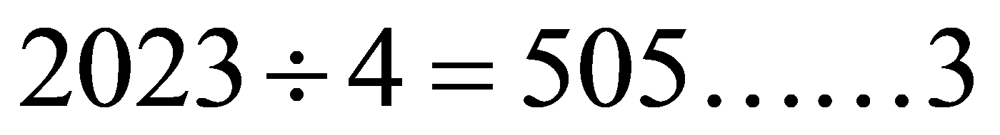
，对应的字母是．
故选：A．
【变式1】正方形 在数轴上的位置如图所示，点D、A对应的数分别为0和1．若正方形绕着顶点顺时针方向在数轴上连续翻转，翻转1次后，点B所对应的数为2；则翻转2024次后，数轴上数2025所对应的点是（ ）
在数轴上的位置如图所示，点D、A对应的数分别为0和1．若正方形绕着顶点顺时针方向在数轴上连续翻转，翻转1次后，点B所对应的数为2；则翻转2024次后，数轴上数2025所对应的点是（ ）

A．点A B．点B C．点C D．点D
【答案】A
【分析】本题主要考查了数字变化规律，有理数与数轴等知识点，由正方形旋转一周后，A、B、C、D分别对应的点为1、2、3、4，可知四次一循环，由此可以确定 所对应的点，发现各个顶点在翻转过程中所对应的数字的规律是解此题的关键．
所对应的点，发现各个顶点在翻转过程中所对应的数字的规律是解此题的关键．
【详解】当正方形在转动第一周过程中，即正方形连续翻转了4次，
第一次翻转A对应1，
第二次翻转B对应2，
第三次翻转C对应3，
第四次翻转D对应4，
…，
∴四次一个循环，
∵，
∴2025所对应的点是A，
故答案为：A．
【变式2】如图，周长为6个单位长度的圆上的六等分点分别为，点A落在1的位置．如果将圆在数轴上沿负方向连续滚动，那么落在数轴上 的点是点（ ）
的点是点（ ）
A． B． C． D．
【答案】C
【分析】本题考查数轴上的规律探究，找出圆运动的周期与数轴上的数字的对应关系是解答此题的关键．圆的周长为6个单位长度，所以只需先求出此圆在数轴上环绕的距离，再用这个距离除以6，看余数是几，再确定和谁重合即可解答．
【详解】解：由图可知，旋转1周，点B对应的数是0，点C对应的数是，点D对应的数是，点E对应的数是，点F对应的点为，点A对应的点为，继续旋转，点B对应的点为，点C对应的点为，……．
∵
又∵，
∴数轴上表示的点与圆周上点D重合．
故选C．
【变式3】如图，等边三角形 的边
的边 在数轴上，现将等边三角形沿着数轴向右翻滚（无滑动），第1次翻滚后点到点
在数轴上，现将等边三角形沿着数轴向右翻滚（无滑动），第1次翻滚后点到点 位置．若点表示的数为，等边三角形的边长为2，则翻滚2024次后点在数轴上对应的数为（ ）
位置．若点表示的数为，等边三角形的边长为2，则翻滚2024次后点在数轴上对应的数为（ ）
A．2024 B．4047 C．4049 D．6071
【答案】C
【分析】本题考查了数轴上动点的规律探究，根据点的变化，找出变化规律是解题的关键．
由图可知，每3次翻转为一个循环，每次循环点表示的数增大6，2024除以3余数为2，根据余数可知点A在数轴上，然后进行计算即可得解．
【详解】解：由题意可得，
每3次翻转为一个循环组依次循环，
，
∴翻转 次后点A在数轴上，
次后点A在数轴上，
∴点A对应的数是．
故选C．

一、单选题
1．如图，数轴上点A表示的数是（ ）

A． B．
B． C．3 D．
C．3 D．
【答案】D
【分析】此题主要考查数轴所表示的数，解题的关键是熟知数轴的特点．
根据数轴的特点即可求解．
【详解】解：由数轴可知，数轴上点A表示的数是．
故选：D．
2．下列各图中所画数轴正确的是（ ）
A． B．
B．
C． D．
D．
【答案】D
【分析】本题考查了数轴的三要素：正方向，原点，单位长度，根据数轴的三要素进行逐项分析，即可作答．
【详解】解：A、没有单位长度，故该选项不符合题意；
B、没有正方向，故该选项不符合题意；
C、数轴的左侧负数顺序错误，故该选项不符合题意；
D、满足数轴的三要素，故该选项符合题意；
故选：D
3．如图，在数轴上，点A、B分别表示a、b，且 ．若
．若 ，则点B表示的数为（ ）
，则点B表示的数为（ ）

A． B． C．0 D．3
B． C．0 D．3
【答案】D
【分析】本题考查了数轴，相反数的定义，根据，得到点A、B分别表示a、b互为相反数，即点A、B到原点的距离相等，利用数轴上两点间距离即可求解．
【详解】解：∵点A、B分别表示数a、b，且，
∴a、b互为相反数，
∵，
∴A，B两点到原点的距离为3，
∵B点位于数轴上正半轴，
∴B点表示的数为3，
故选：D．
4．若 ，则数轴上到有理数
，则数轴上到有理数 对应的点与到对应的点的距离相等的点是（ ）
对应的点与到对应的点的距离相等的点是（ ）
A．3 B． C．3或6 D．3或
C．3或6 D．3或
【答案】D
【分析】本题考查了化简绝对值，在数轴上表示有理数，由绝对值的意义确定m的值，再根据数轴上两点间距离相等的条件建立方程进行求解，即可作答．
【详解】解：∵，
∴得或，
根据题意，这个点表示的数为x，
x到m的距离等于x到的距离，
即，
当时，则，
即或，
∴无解或 ，
，
当时，则，
即或，
∴无解或 ，
，
故选：D
5．若数轴上的点 表示的数是
表示的数是 ，那么与点相距
，那么与点相距 个单位长度的点表示的数是（ ）
个单位长度的点表示的数是（ ）
A． B．
B． C．
C． D．或
D．或
【答案】D
【分析】本题考查了两点间距离公式，利用两点间距离公式计算即可求解，掌握两点间距离公式是解题的关键．
【详解】解：∵数轴上的点表示的数是，
∴与点相距个单位长度的点表示的数为 或
或 ，
，
故选： ．
．
6．若数轴上表示整数的点称为整点，画一数轴，并规定单位长度为l厘米，若在这条数轴上随意画出一条长10厘米的线段 ，则线段盖住的整点有（ ）
，则线段盖住的整点有（ ）
A．8个或9个 B．9个或10个 C．10个或11个 D．11个或12个
【答案】C
【分析】分线段的端点在整点上和不在整点上两种情况讨论，据此得出规律即可解答本题．
【详解】解：依题意得：①当线段的端点在整点上时，覆盖11个数；
②当线段的端点不在整点，即在两个整点之间时覆盖10个数．
故选：C．
【点睛】本题主要考查了分类讨论思想和数形结合思想的应用，取一个较小的整数，然后画出图形得出规律是解决此题的关键．
二、填空题
7．规定了原点、 和 的直线叫做数轴．
【答案】 正方向 单位长度
【分析】本题考查了数轴的定义，熟练掌握数轴的定义：规定了原点、正方向和单位长度的直线叫做数轴是解题的关键．根据数轴的定义即可解答．
【详解】解：规定了原点、正方向和单位长度的直线叫做数轴．
故答案为：正方向；单位长度．
8．如图，数轴上点A所表示的数是 ．
【答案】
【分析】本题考查了数轴，根据数轴的定义即可得出答案．
【详解】解：由数轴可知，数轴上点A表示的数是．
故答案为：．
9．下面的数轴被墨迹盖住一部分，被盖住的整数有 个．
【答案】9
【分析】本题考查了数轴．熟练掌握数轴是解题的关键．根据在数轴上表示有理数进行作答即可．
【详解】解：由数轴可知，被盖住的整数有，共9个，
故答案为：9．
10．已知有理数 在数轴上的位置如图所示，则
在数轴上的位置如图所示，则 从大到小的顺序为 ．
从大到小的顺序为 ．

【答案】
【分析】本题考查了在数轴上表示有理数，利用数轴比较有理数的大小，先根据数轴，得出的情况，即可作答．
【详解】解：依题意，在数轴上的情况如下：
∴ ，
，
则从大到小的顺序为，
故答案为：．
11．如图，在一个不完整的数轴上有 三个点，数轴的单位长度为1．若点
三个点，数轴的单位长度为1．若点 表示的数互为相反数，则图中点
表示的数互为相反数，则图中点 表示的数是 ．
表示的数是 ．
【答案】1
【分析】本题考查的是相反数在数轴上的位置，根据给出的条件可求得原点的位置，然后求C表示的数即可．
【详解】解：∵点 表示的数互为相反数，
表示的数互为相反数，
∴原点在图中所示位置：
∴点表示的数．
故答案为：．
12．一条数轴，从数轴上面剪下6个单位长度（从到4）的一条线段，并把这条线段沿某点折叠，然后在重叠部分某处剪一刀得到三条线段．若这三条线段的长度之比为 ，则折痕处对应的点所表示的数可能是 ．
，则折痕处对应的点所表示的数可能是 ．
【答案】 或1或
或1或
【分析】本题考查实数与数轴，熟练掌握数轴上点的特征，两点间距离的求法，折叠的性质，利用中点公式解决折叠问题是解题的关键．设三条线段的长分别是 ，，
，， ，由题意可得，求出
，由题意可得，求出 ，再分三种情况讨论：①当时；②当时；③当时；分别求解即可．
，再分三种情况讨论：①当时；②当时；③当时；分别求解即可．
【详解】解：∵三条线段的长度之比为，
∴设三条线段的长分别是，，，
∵到4的距离是6，
，
，
 三条线段的长分别为
三条线段的长分别为 ，，3，
，，3，
①当时，折痕点表示的数是；
②当时，折痕点表示的数是；
③当时，折痕点表示的数是；
综上所述：折痕处对应的点表示的数可能或1或．
故答案为：或1或．
三、解答题
13．如图的数轴上，每小格的宽度相等．
(1)填空：数轴上点A表示的数是______，点 表示的数是______．
表示的数是______．
(2)点表示的数是，点 表示的数是
表示的数是 ，请在数轴上分别画出点和点的位置．
，请在数轴上分别画出点和点的位置．
【答案】(1)
(2)见解析
【分析】本题主要考查了数轴上的数、比较有理数的大小等知识点，理解两个整数之间的单位长度是解题的关键．
（1）根据数轴直接解答即可；
（2）根据单位长度，在数轴上表示点和点=即可；
【详解】（1）解：由数轴可得：点A表示的数是 ，点B表示的数是
，点B表示的数是 ，
，
故答案为：，；
（2）解：如图：点和点即为所求．
14．（1）把数表示在下面的数轴上．
（2）比较这六个数的大小，并用“>”连接．

【答案】(1)详见解析(2)
【分析】(1)根据数轴特点把各数表示在数轴上，
(2)根据数轴上右边的点表示的数总比左边的大用“”连接即可．
【详解】解：(1)如图，，，，
各数在数轴上表示为，
(2)由数轴知，从大到小排列为：
．
【点睛】本题主要考查了利用数轴比较有理数的大小，绝对值，正负数，用数轴上的点表示有理数，熟练掌握用数轴上的点表示有理数是解决此题的关键．
15．如图，数轴上每个刻度为1个单位长度，点A表示的数是．

(1)则B所表示的数是______．
(2)数轴上有点P，且P到A、B两点的距离相等，则P点表示的数为______．
(3)数轴上有点C，且与点B的距离为2个单位长度，那么点C表示的数为______．
【答案】(1)4
(2)
(3)2或6
【分析】本题主要考查数轴的特点，掌握数轴的三要素，数轴上点与有理数的对应关系是解题的关键 ．
（1）根据点A表示的数，确定原点，由此即可求解；
（2）根据数轴上中点的计算即可求解；
（3）根据题意，运用数轴上两点之间距离的计算方法，分类讨论即可．
【详解】（1）解：点A表示的数是，则原数如图所示，
∴点B表示的数为4，
故答案为：4；
（2）解：点A表示的数是，点B表示的数为4，
∴到A、B两点的距离相等的点表示的数为，
∴则P点表示的数为，
故答案为：；
（3）解：点B表示的数为4，
∴当点C在点B左边时，点C表示的数为2；当点C在点B的右边时，点C表示的数为6，
故答案为：2或6．
16．如图，在数轴上有 三点，请回答下列问题．
三点，请回答下列问题．

(1)将点B向左移动4个单位长度后，点_______所表示的数最小，是_______；
(2)将点A向右移动3个单位长度后，点_______所表示的数最小，是_______；
(3)将点C向左移动6个单位长度后，点B所表示的数比点C所表示的数大_______；
(4)怎样移动中的两个点，才能使三个点表示的数相同？有几种移动方法？
【答案】(1)B，
(2)B，
(3)1
(4)见解析
【分析】本题考查用数轴上的点表示有理数，数轴上点的平移：
（1）根据向左移动减求出点B表示的数，然后作出判断即可；
（2）根据向右移动加求出点A表示的数，然后作出判断即可；
（3）根据向左移动减求出点C表示的数，用点B所表示的数减去点C所表示的数即可；
（4）根据A、B、C有一点不移动，分三种情况讨论．
【详解】（1）解：三点表示的数分别是 ，，，
，，，
将点B向左移动4个单位长度后表示的数是： ，，
，，
因此点B所表示的数最小，是，
故答案为：B，；
（2）解：将点A向右移动3个单位长度后表示的数是：，，
因此点B所表示的数最小，是，
故答案为：B，；
（3）解：将点C向左移动6个单位长度后表示的数为： ，
，
，
因此点B表示的数比点C表示的数大1；
故答案为：1；
（4）解：有三种不同的移动方法：
①将点A向右移动2个单位长度，将点C向左移动5个单位长度；
②将点A向右移动7个单位长度，将点B向右移动5个单位长度；
③将点B向左移动2个单位长度，将点C向左移动7个单位长度．
17．【定义】已知点是线段上的一个分点，若点到线段两个端点的距离之比为 时，则称点为线段的“理想点”．如图，、分别为数轴上的两点，点对应的数为
时，则称点为线段的“理想点”．如图，、分别为数轴上的两点，点对应的数为 ，点对应的数为100．
，点对应的数为100．

(1)求点A、B之间的距离；
(2)求线段的“理想点”所对应的数；
(3)现将一纸条如图放置，再沿纸条上的某处折叠，然后在重叠部分某处剪一刀得到三条纸条，若这三条纸条的长度之比为 ，然后把纸条复原，请计算说明折痕处对应的点在数轴上所表示的数是多少？
，然后把纸条复原，请计算说明折痕处对应的点在数轴上所表示的数是多少？
【答案】(1)120
(2)20，60
(3)16，40，64
【分析】本题考查数轴两点之间的距离和翻折问题，理解题意，分类讨论是解题的关键．
（1）根据数轴上两点之间的距离定义求解即可．
（2）根据“理想点”定义及到、距离的比例关系，分情况讨论对应数轴上的数即可．
（3）由线段总长度及三条纸条的长度之比，可得三条线段的长度，再分情况讨论即可．
【详解】（1）解：∵点对应的数为，点对应的数为100，
∴，
∴点A、B之间的距离是120．
（2）解：∵，点到线段两个端点的距离之比为，
当 时，
时， ，
，
∵点对应的数为，
∴所对应的数为20；
当 时，，
时，，
∵点对应的数为，
∴所对应的数为60；
∴线段的“理想点”所对应的数是20，60．
（3）∵三条纸条的长度之比为，，
∴ ，
，
∴三条纸条的长度为24，24，72，
①当从到三条纸条的长度为24，24，72，如图：

则折痕到的长度是，
∵点对应的数为，
∴痕处对应的点在数轴上所表示的数是 ；
；
②当从到三条纸条的长度为24， 72，24，如图：
则折痕到的长度是 ，
，
∵点对应的数为，
∴痕处对应的点在数轴上所表示的数是；
③当从到三条纸条的长度为72，24，24，如图：
则折痕到的长度是 ，
，
∵点对应的数为，
∴痕处对应的点在数轴上所表示的数是 ；
；
综上所述，折痕处对应的点在数轴上所表示的数是16，40，64．
18．同学们通过学习知道了点A，B在数轴上分别表示有理数a，b，则A，B两点之间的距离表示为 ．请回答：
．请回答：
(1)如图，数轴上表示和5的两点之间的距离是___________，数轴上表示和的两点之间的距离是___________；
(2)若数轴上A，B两点表示的数分别为x和，
①A，B两点之间的距离可表示为___________；
②如果，求x的值；
(3)若数轴上A，B两点表示的数分别为和6，点P是线段上的一个动点，且点P表示的数为x，请直接写出 的值．
的值．
【答案】(1)7，3
(2)① ；②2或
；②2或
(3)11
【详解】（1）解：根据A，B在数轴上分别表示有理数a，b，则A，B两点之间的距离表示为，
则数轴上表示-2和5的两点之间的距离，
数轴上表示-2和-5的两点之间的距离．
故答案为7，3．
（2）解：① 数轴上A，B两点表示的数分别为x和，
数轴上A，B两点表示的数分别为x和，
A，B两点之间的距离．
②，
，
解得 或．
或．
（3）解：点P在线段上，因此x的取值范围为，
计算的值：
当时，；
当时，，
因此：
【点睛】此题综合考查了数轴距离、绝对值性质、绝对值方程、动点问题以及数轴上的几何意义等多个知识点，要求学生具备较强的数形结合能力和代数运算能力．